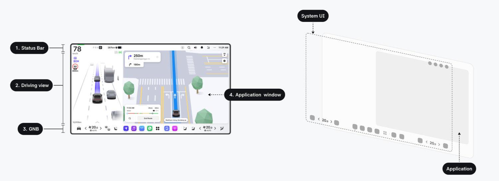
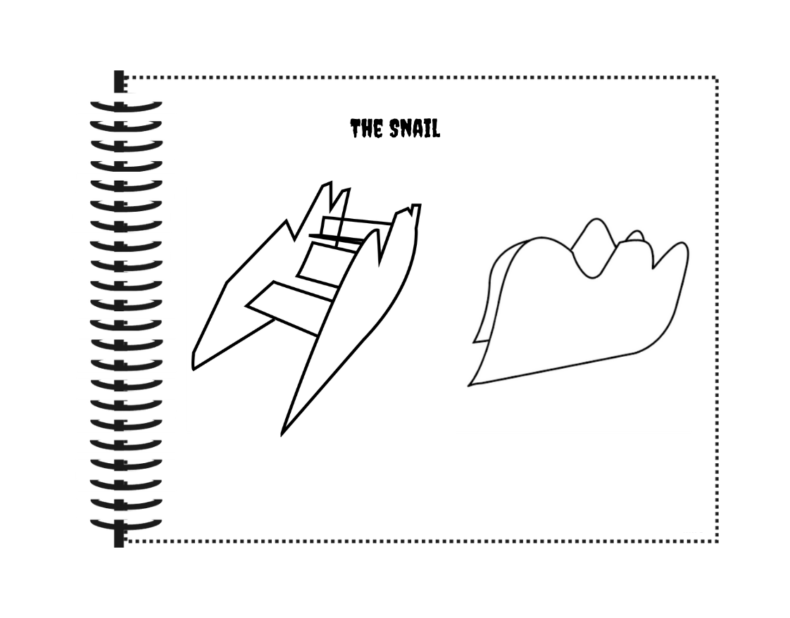
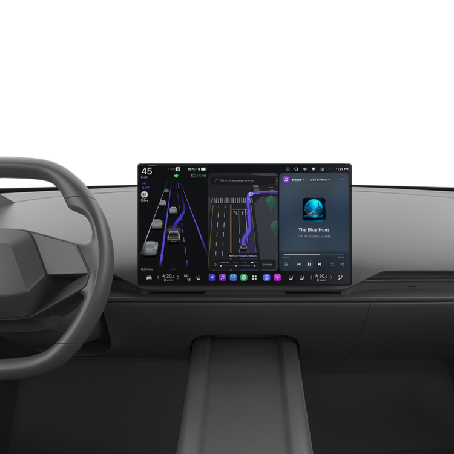
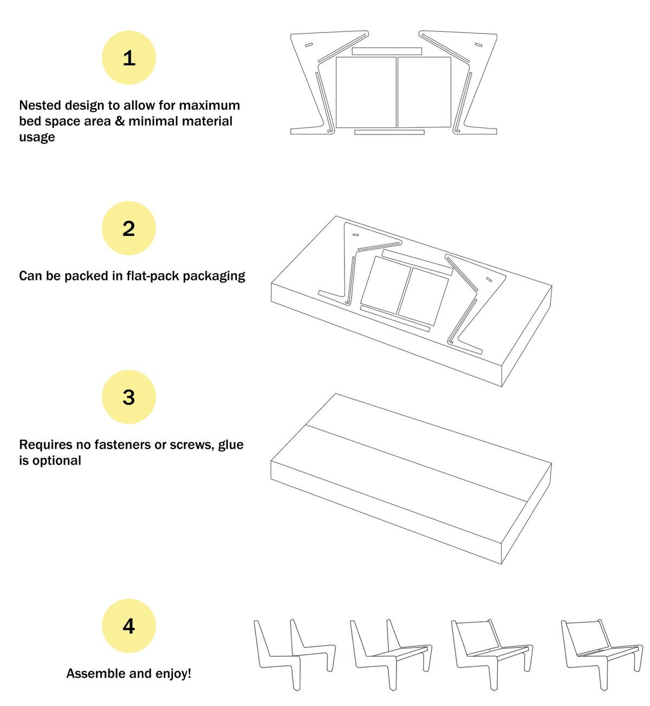
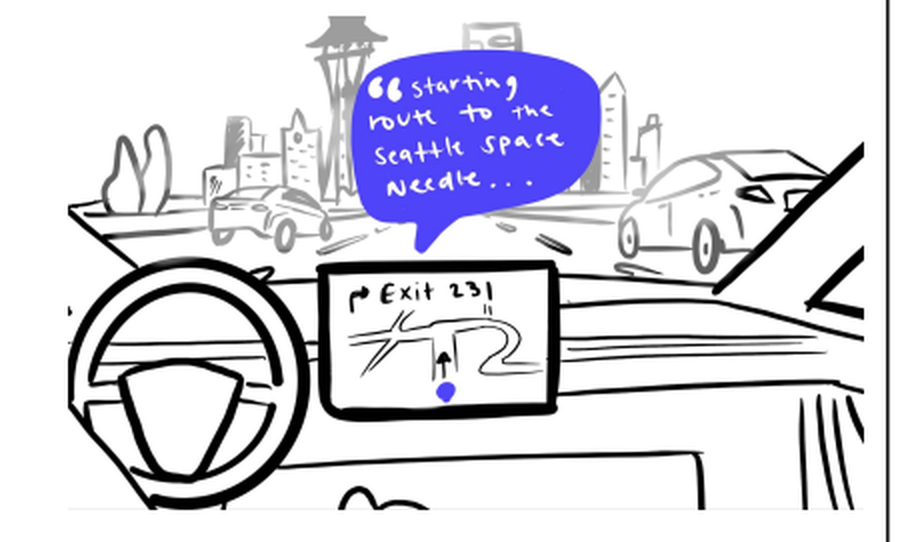

01
Designing the Next Generation of Radio for North America
Leading the UX design of Hyundai Motor Group's next-generation radio, a modular system that works across many vehicle form factors.
I'm JerryLee, a human-centered designer focused on UX research, UX design, and end-to-end product strategy.
Add a sentence about what you're working on now, or what you're looking for next.

Leading the UX design of Hyundai Motor Group's next-generation radio, a modular system that works across many vehicle form factors.

A play-based piece of furniture with an accompanying instruction booklet that helps parents and children bond through building together, without screens.

Add a one or two sentence summary of this project here.

A semester-long furniture design course: a walnut chair shaped by form, function, sustainability, and material usage.

Designing charming features for semi-autonomous vehicles, in collaboration with the BNUX design team at Beijing Normal University.
No projects in this category yet.